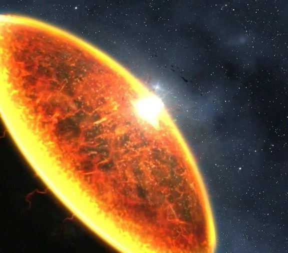
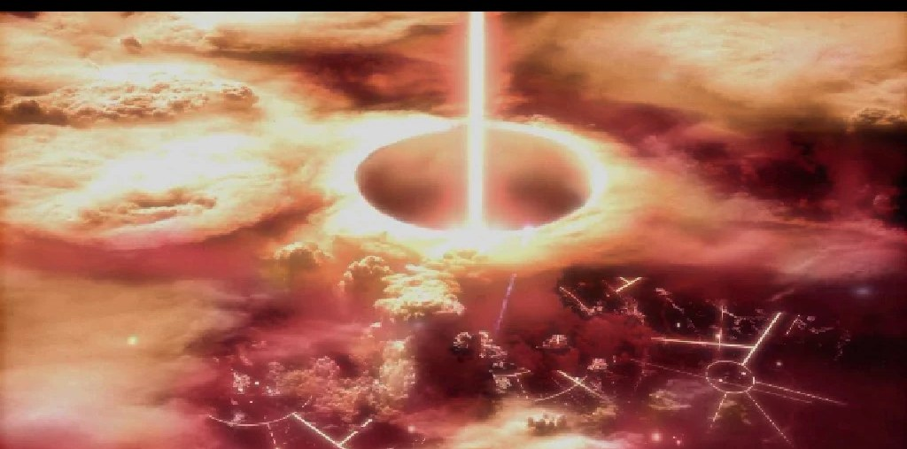

Exterminatus
| Exterminatus | |
|---|---|
| Sanctioned destruction of a world | |
 A world consumed by cyclonic fire after Exterminatus, from an Imperial Navy record Artwork © Games Workshop | |
| Authorised by | Any full Inquisitor; the High Lords of Terra; senior commanders of the Imperial Navy, Astra Militarum and Adeptus Astartes |
| Carried out by | Warships of the Imperial Navy, the Inquisition or a Space Marine Chapter |
| Methods | Virus bombs, cyclonic torpedoes, orbital bombardment, nuclear weapons, other means |
| Result | World reclassified as a Dead world, Aptus Non, and removed from the tithe rolls |
| Overseen by | The Inquisition, which reviews each order, and the Administratum, which strikes the world from the tithe rolls |
| Notable instances | Isstvan III (005.M31), Tallarn (010.M31), Loki (c. 395.M41), the worlds of Kryptman's Cordon (late M41), St. Josmane's Hope (999.M41) |
Exterminatus, in High Gothic the extermination of an entire world, is the sanctioned destruction of all life on a planet by the forces of the Imperium of Mankind. It is the most extreme power the Imperium possesses. The order is given only when a world is judged to pose a threat to the Imperium that no lesser means can contain: when it has fallen to Chaos beyond recovery, when it is infested by Tyranids or by a genestealer cult, when a plague or mutation threatens to spread, or when the price of holding or retaking it would be greater than the Imperium can bear. Imperial scholars treat it as a last resort and describe it in the same terms as the amputation of a limb to save a body.[1][2]
The authority to order Exterminatus belongs to the High Lords of Terra, to any full Inquisitor on his own judgement, and to certain senior commanders of the Astra Militarum, the Imperial Navy and the Adeptus Astartes, among them some Chapter Masters. Those who order it are expected to answer for the decision. An Inquisitor whose peers judge that he ordered an unnecessary Exterminatus may himself be declared a heretic and hunted down.[1][3]
The weapons used vary with the world. Most are delivered from orbit by warships: sustained bombardment, virus bombs that consume every living thing and leave the planet's crust intact, and cyclonic torpedoes that burn away the atmosphere and may crack the planet itself. Other worlds have been destroyed by more improvised means, such as the dropping of a moon on Loki during the Macharian Crusade or the overloading of a reactor on St. Josmane's Hope in 999.M41. The act was also used as a weapon of treason in the Horus Heresy, when the Warmaster Horus ordered the virus-bombing of Isstvan III in 005.M31, and again when the Iron Warriors virus-bombed Tallarn in 010.M31.[1][4][5]
A world that has suffered Exterminatus is reclassified by the Administratum, usually as a Dead world, and struck from the tithe rolls. The Imperium has carried out the act many times, and the Administratum keeps records of the worlds destroyed. In the Era Indomitus, when the Great Rift has multiplied the dangers that a single sector must face, Exterminatus remains the ultimate answer available to an Imperial commander, and the debate over its use has not been settled.[1][6]
Doctrine and authority
[edit]The justification
[edit]Imperial doctrine accepts that the cost of Exterminatus may be billions of lives, and holds that it is justified when the alternative is the loss of a sector or the spread of a corruption that could not be stopped. A saying attributed to the Exterminatus Extremis tells those who must give the order that they have no right to let such a world live, and that those who understand this will bear the weight of the choice. The Ordo Hereticus teaches the same in its doctrinal manuals, which hold that there is no place for hesitation and that no sacrifice is too great.[1][3]
In practice Exterminatus is very rarely used against worlds of great value to the Imperium. A Forge world or a prosperous Hive world is more likely to be retaken at any cost, and the Administratum counts the tithe lost when a populous world is destroyed. The order is therefore usually given against worlds that have little strategic worth, or against worlds so far gone that nothing can be saved from them.[1][2]
Who may order it
[edit]The Inquisitor has the absolute right to order Exterminatus at any time, and his authority is usually enough to command the warships of any Imperial fleet within reach. The Inquisition is the only body within the Imperium known to hold stocks of cyclonic torpedoes for this purpose, along with the Adeptus Astartes, and a number of Chapter Masters have carried out the act on their own authority. Senior commanders of the Navy and the Astra Militarum may also give the order in time of war, and the High Lords of Terra may command it for any world in the Imperium.[1][3]
The decision is never without risk to the one who takes it. An Inquisitor who orders Exterminatus will have his course examined by his fellow Inquisitors, and if they find the act unnecessary he may be condemned and pursued by other members of the Inquisition. The reviews are held in secret, and many of their verdicts have never been published.[1][3]
Evacuation and preparation
[edit]Where time allows, the order is accompanied by an evacuation of what the Imperium values most: rulers and officials, relics and archives, and sometimes selected workers. The evacuation is brief and ruthless, and no more people are saved than the available ships can carry. Fleets assigned to an Exterminatus usually arrive with the means to prevent escape, since a single ship that reaches the warp may carry the contamination that the order was meant to end.[1][2]
Methods
[edit]All of the following, with the exceptions listed under other methods, are delivered by warships from orbit. The choice depends on the nature of the world, the nature of the threat and the weapons available to the fleet.[1]
Orbital bombardment
[edit]Bombardment by the guns of an Imperial fleet is the simplest means of Exterminatus, since it needs nothing beyond the weapons already on board. Its force can range from small precision strikes to the release of full thermonuclear weapons. Fleets of the Navy and the Adeptus Astartes have used nuclear weapons in the megaton range to scour worlds of life and leave them radioactive husks on which nothing can live. Where a more thorough result is wanted, specialised munitions such as cyclonic torpedoes are used.[1]
Virus bombs
[edit]
Virus bombs release the life-eater virus, a pathogen engineered to spread at great speed and to destroy every organic cell it touches. Plants and animals alike are reduced to a sludge of biochemicals and gases, both highly flammable. The protocols of Exterminatus direct that a lance strike or an incendiary device be used to ignite these products, so that a firestorm sweeps the planet and destroys whatever life remains. Only those who have retreated into deep and sealed shelters can survive. The speed of the virus is notorious: on Isstvan III in 005.M31 it destroyed a population of some sixteen billion in a matter of minutes, leaving a barren world that could just be inhabited. The Space Marines on its surface had to build airtight shelters in haste, and the loss among them was still very heavy.[1][4]
The population of Tallarn survived the Iron Warriors' virus bombardment of 010.M31 only because it had built vast underground shelters, but its once green world was changed for ever into a desert.[5]
Cyclonic torpedoes
[edit]A cyclonic torpedo is a weapon of planetary destruction, launched from a ship into low orbit. The class includes many variants, among them the atmospheric incinerator torpedo, but all can destroy the whole biosphere of the target. Some ignite all the free oxygen in the air in a thermonuclear reaction, and others deliver a bombardment of plasma boosted by nuclear fusion. The result is always the same: the atmosphere is burned away, the oceans boil to vapour, and the bare rock of a dead world remains. The blast can be seen from space, and is often strong enough to crack the crust and destabilise the core.[1][7]

A more exotic class, the two-stage cyclonic torpedo, is made for worlds with no atmosphere or life, such as the tomb worlds of the Necrons. The first stage is an unusually powerful melta charge that bores through the crust and the mantle to the core, and the second stage is a modified plasma charge that destabilises it, so that in most cases the planet is destroyed from within.[1]
Other methods
[edit]During the Macharian Crusade (c. 392–399.M41), Macharius ordered the destruction of the world of Loki. His tech-priests set huge plasma drives on the surface of Loki's moon and moved it into a new orbit. The moon struck the planet and did not destroy it outright. It caused great earthquakes and waves of lava, and the only survivors were the heretics who sheltered in the largest fortresses.[8]
During the Thirteenth Black Crusade (999.M41), the Lord Castellan Ursarkar E. Creed, commander of the whole Cadian Sector, ordered the generatorium on the prison world of St. Josmane's Hope to be overloaded when it seemed that the forces of Chaos would take it. The reactor did not melt down. It exploded with such force that the planet was blown apart.[9]
Notable instances
[edit]| Date | World | Ordered by | Notes |
|---|---|---|---|
| 005.M31 | Isstvan III | Horus | Virus-bombing of the loyalists of four Legions; the opening atrocity of the Horus Heresy |
| 010.M31 | Tallarn | Iron Warriors | Virus-bombing of a populous world; survivors fought the Battle of Tallarn from underground shelters |
| c. 395.M41[a] | Loki | Macharius | Moon dropped on the planet |
| Late M41 | Worlds of Kryptman's Cordon | Inquisitor Kryptman | Destroyed to starve Hive Fleet Leviathan |
| 999.M41 | St. Josmane's Hope | Ursarkar Creed | Generatorium overloaded to deny the world to Chaos |
Records also name other fleets and worlds. The Typhon Primaris campaign of the Third Aurelian Crusade ended with the use of an atmospheric incinerator torpedo,[b] and the Battlefleet Ultima Primus is recorded as having destroyed the world of Dolumar IV with cyclonic torpedoes.[7]
Kryptman's Cordon
[edit]In the late 41st millennium the Inquisitor Kryptman of the Ordo Xenos ordered the destruction of a ring of worlds in the path of Hive Fleet Leviathan, so that the Tyranids would find nothing to consume. The measure, known as Kryptman's Cordon, was condemned by many of his peers, and he was expelled from the Inquisition. Its supporters held that it saved many more worlds than it destroyed.[10]
Consequences
[edit]A world that has suffered Exterminatus is reclassified by the Administratum and removed from the tithe rolls, usually as a Dead world. Some are recolonised after centuries. Tallarn became a desert world whose people later raised the Tallarn Desert Raiders, some of the finest armoured regiments of the Astra Militarum. Others stay barren, and are used as fortresses or bases by the Imperium or its enemies.[1][5]
Imperial thinkers have debated the act. Some writers of the Ecclesiarchy hold that the destruction of a world without a trial of its people is a sin. The Inquisition answers that it is the lesser evil when the alternative is the loss of a sector. The debate is sharpest when the world destroyed was loyal, as in the cordon of Kryptman. Since the opening of the Great Rift in 999.M41 many Imperial commanders have had to weigh the same question under the threat of daemonic invasion, and the denial of worlds to the enemy has been a part of the Imperium's defence ever since.[3][6]
Exterminatus also bears on the way the Imperium treats other threatened worlds. The Inquisition will move swiftly and with great severity against any world where the forces of Chaos have gained a hold, so that it does not become a Daemon world. A daemon world cannot easily be destroyed, because the reality-shifting effects around it prevent the Imperium from trying.[11]
Timeline
[edit]| Date | Event |
|---|---|
| 005.M31 | Horus orders the virus-bombing of Isstvan III, destroying the loyalists of four Legions. |
| 010.M31 | The Iron Warriors virus-bomb Tallarn. Survivors sheltered underground fight the war that follows. |
| c. 392–399.M41 | During the Macharian Crusade, Macharius has the moon of Loki moved into a new orbit to fall on the planet.[c] |
| Late M41 | The Inquisitor Kryptman orders the destruction of a ring of worlds in the path of Hive Fleet Leviathan.[d] |
| 999.M41 | During the Thirteenth Black Crusade, the Lord Castellan Ursarkar Creed has the generatorium of St. Josmane's Hope overloaded to deny the world to Chaos. |
| 999.M41 | The Great Rift opens; the question of Exterminatus is raised afresh for many worlds along its length. |
See also
[edit]Notes
[edit]References
[edit]- ^ a b c d e f g h i j k l m n o Warhammer 40,000: Rulebook (6th edition). Games Workshop. p. 154.
- ^ a b c McNeill, Graham. Ultramarines series (novels). Black Library.
- ^ a b c d e Watson, Ian. Inquisition War trilogy (novels). Black Library.
- ^ a b Swallow, James. The Flight of the Eisenstein (novel). Black Library.
- ^ a b c French, John. Tallarn: Executioner (novel). Black Library.
- ^ a b "Exterminatus". Warhammer 40k Wiki (Fandom).
- ^ a b Warhammer 40,000: Dawn of War II and Dawn of War II: Retribution (video games). THQ.
- ^ King, William. Fall of Macharius (novel). Black Library. pp. 215-217.
- ^ Warhammer 40,000: Fire Warrior (video game), campaign ending cutscene.
- ^ Codex: Tyranids (5th edition). Games Workshop.
- ^ "Daemon World". Warhammer 40k Wiki (Fandom).